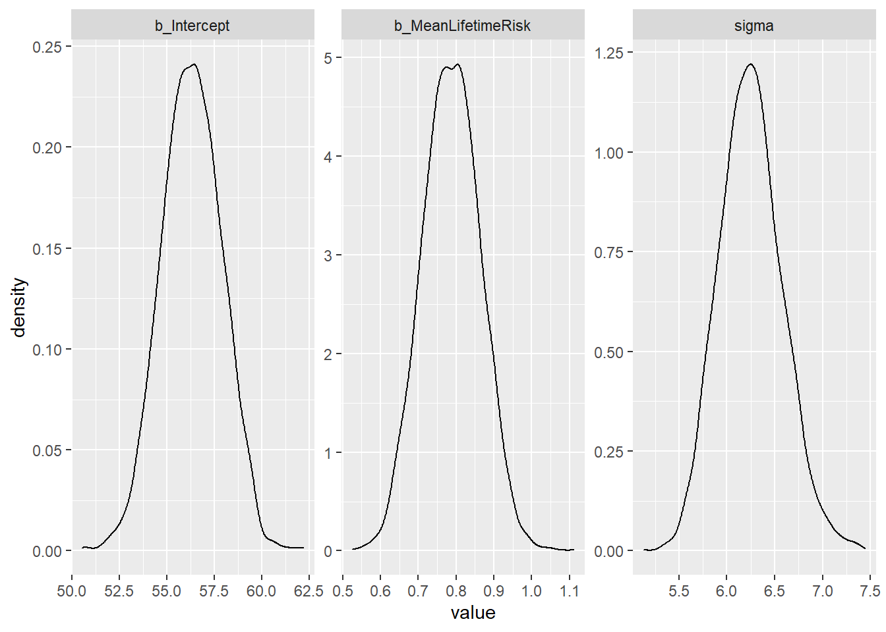
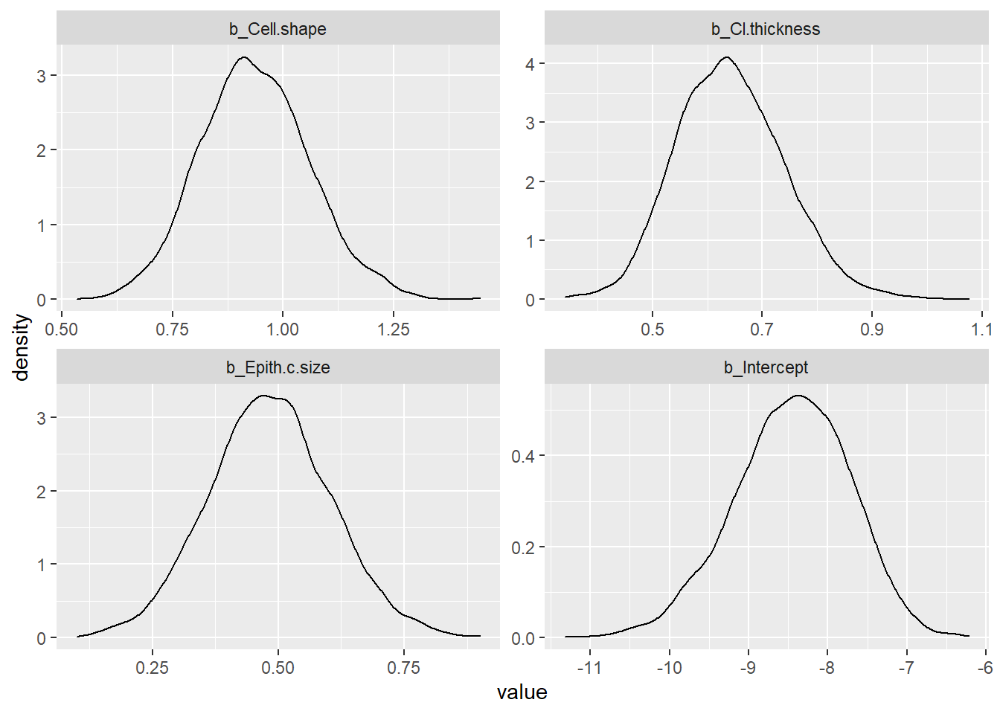
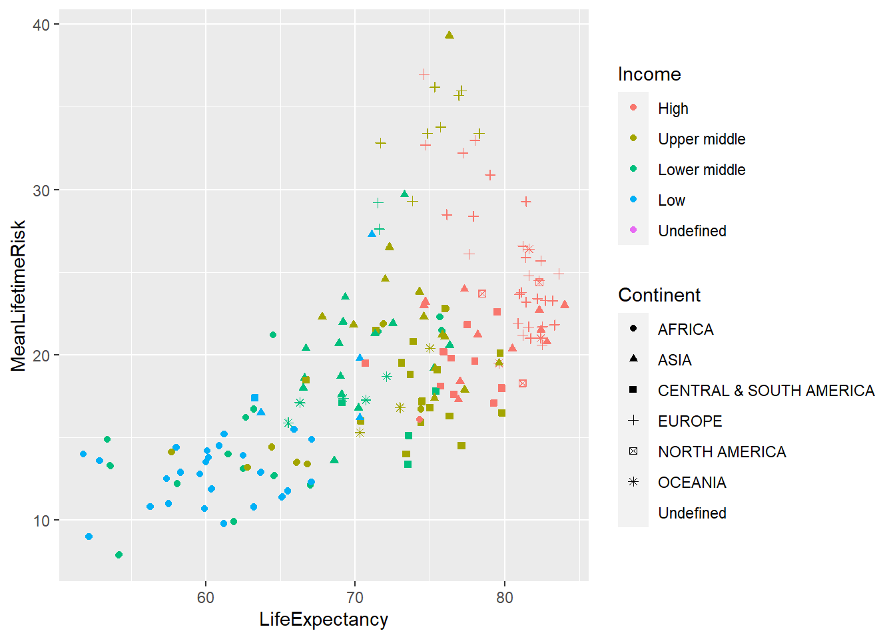
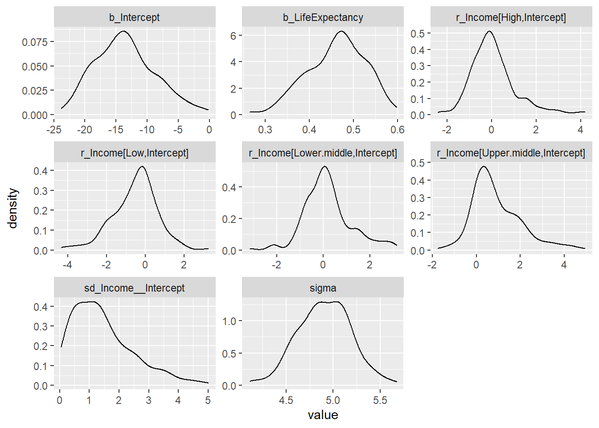
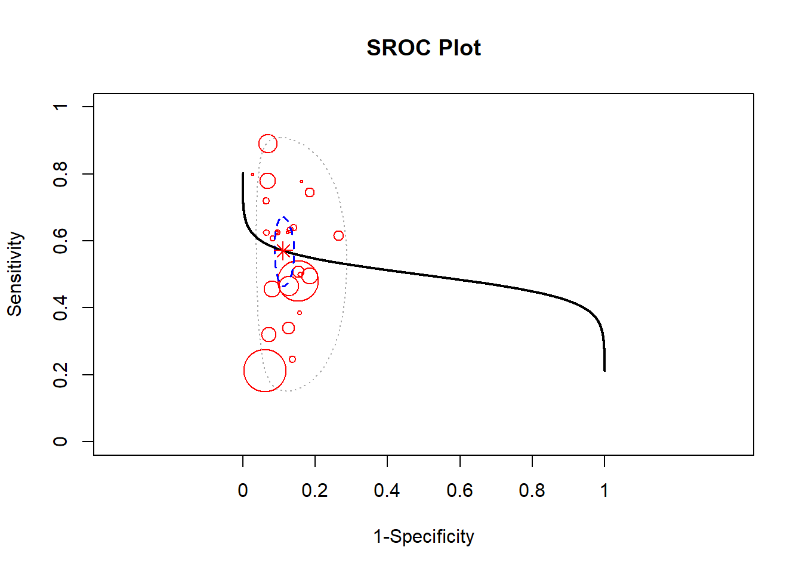
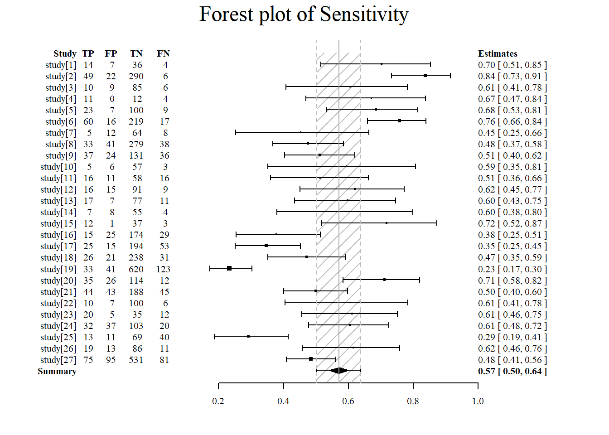
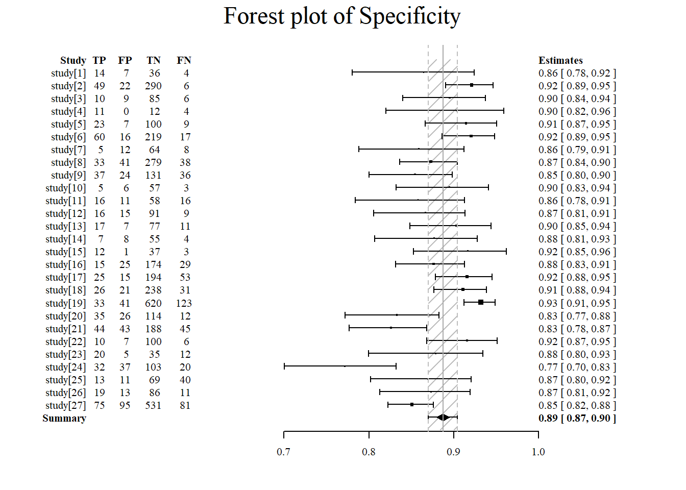

Chapter 8 Bayesian Analysis
8.1 Baysian belief
Bayes Theorem deals with the impact of information update on current belief expresses in terms of probability. P(A|B) is the posterior probability of A given knowledge of B. P(A) is the prior probability. P(B|A) is the conditional probability of B given A. P(A|B)=P(B|A) x P(A)/P(B)
Bayes’ theorem can be expressed in terms of odds and post-test probabilities. This concept had been used in the analysis of the post-test probabilities of stroke related to the use of ABCD2. In this case the likelihood ratio and pretest probability of stroke in patients with TIA is used to calculate the post-test probability.
Table 13. 2 x 2 table Disease + Disease - Test + eg ABCD2≥4 TP FP Test – eg ABCD2<4 FN TN
The true positive rate (TPR) can be expressed as conditional probability P(T+|D+). TP is the joint distribution of T+ and D+ while TN is the joint distribution of T- and D-.
The true negative rate (TNR) can be expressed as conditional probability P(T-|D-).
In the setting of ABCD2, the pre-test odds is derived from cases of TIA and stroke outcome at 90 days.
The positive likelihood ratio (PLR) in this case is derived from the sensitivity of ABCD2 for stroke and the one minus specificity of ABCD for stroke. One can interpret the likelihood ratio in terms of Bayes theorem.
To derive the post-test odds, the PLR is multiplied by the pre-test odds at the voxel level. The post-test odds is given by the product of the pre-test odds and the likelihood ratio.
In turn, the post-test probabilities is calculated from the post-test odds by:
8.1.1 Conditional probability
Two events are independent if
Or
It follows that the events A and B occur simultaneously P(A∩B) is given by the probability of event A and probability of event B given that A has occurred.
If events A and B are independent then P(A∩B) is given by the probability of event A and probability of event B.
8.1.1.1 Bayes Rule
For a sample space (A) containing n different subspaces (A1, A2..An) and A is a subset of the larger sample space B+ and B-, the probability that A is a member of B+an be given by P(A|B+). This can be divised as a tree structure with one branch given by the product of P(B+) and P(A|B+) and the other P(B-) and P(A|B-). The probability of B is given by the sum of P(B+)P(A|B+) and P(B-)P(A|B).
To make a decision on which of An events to choose, one evaluate the conditional probability of each subset e.g. P(A1∩B)/P(B), P(A2∩B)/P(B)…P(An∩B)/P(B). The probability of P(B) is given by the sum of P(A1∩B), P(A2∩B)…P(An∩B). Here P(An∩B) is the same as P(An)P(B|An). The subspace with the highest conditional probability may yield the optimal result.
8.1.1.2 Conditional independence
The conditional distribution is given by
Conditional independence states that two events (A, B) are independent on a third set (C) if those two sets are independent in their conditional probability distribution given C782. This is stated as
8.2 Markov model
The Markov chain describes a chain of memoryless states which transit from one state to another without dependency on previous states. The Markov property The transition matrix describes the probabilities of changing from one state to another. A property of this Markov matrix is that the column data sum to one. An example is provided here \(\left[\begin{array}{cc}.8 & .7\\.2 &.3\end{array}\right]\). The column probabilities sum to 1. The PageRank method that we discuss in chapter on Graph Theory is a special form of Markov chain.
8.3 INLA, Stan and BUGS
In the example here, the GBD 2016 life time risk of stroke is re-used. The model is shown next to the simple linear regression. INLA is used to infer the probability of a set of data given the defined parameters. In the regression example below the linear regression return coefficient of 0.788 and the INLA version returns a mean value of 0.789 as well. Note that Bayesian methods do not provide p-values.
8.3.1 Linear regression
## Loading required package: Matrix## Warning: package 'Matrix' was built under R version 4.0.5## Loading required package: sp## Loading required package: parallel## Loading required package: foreach## This is INLA_20.07.18-2 built 2020-07-18 12:21:38 UTC.
## - See www.r-inla.org/contact-us for how to get help.
## - Save 521.2Mb of storage running 'inla.prune()'load("./Data-Use/world_stroke.Rda")
#perform ordinary linear regression for comparison
fit<-lm(LifeExpectancy~MeanLifetimeRisk, data =world_sfdf)
summary(fit)##
## Call:
## lm(formula = LifeExpectancy ~ MeanLifetimeRisk, data = world_sfdf)
##
## Residuals:
## Min 1Q Median 3Q Max
## -15.5141 -4.8413 0.1315 5.3673 10.5146
##
## Coefficients:
## Estimate Std. Error t value Pr(>|t|)
## (Intercept) 56.27490 1.59843 35.21 <2e-16 ***
## MeanLifetimeRisk 0.78852 0.07655 10.30 <2e-16 ***
## ---
## Signif. codes: 0 '***' 0.001 '**' 0.01 '*' 0.05 '.' 0.1 ' ' 1
##
## Residual standard error: 6.223 on 173 degrees of freedom
## (71 observations deleted due to missingness)
## Multiple R-squared: 0.3802, Adjusted R-squared: 0.3766
## F-statistic: 106.1 on 1 and 173 DF, p-value: < 2.2e-16Here the output of Bayesian analysis contrasts with the frequentist output above.
#need to subset data as world_sfdf is of class "sf" "tbl_df" "tbl" "data.frame"
fitINLA<-inla(LifeExpectancy~MeanLifetimeRisk, family = "gaussian", data =world_sfdf[,c(23,12)])## Warning in .recacheSubclasses(def@className, def, env): undefined subclass
## "numericVector" of class "Mnumeric"; definition not updated##
## Call:
## c("inla(formula = LifeExpectancy ~ MeanLifetimeRisk, family =
## \"gaussian\", ", " data = world_sfdf[, c(23, 12)])")
## Time used:
## Pre = 0.448, Running = 0.337, Post = 0.281, Total = 1.07
## Fixed effects:
## mean sd 0.025quant 0.5quant 0.975quant mode kld
## (Intercept) 56.275 1.598 53.135 56.275 59.413 56.275 0
## MeanLifetimeRisk 0.789 0.077 0.638 0.789 0.939 0.789 0
##
## Model hyperparameters:
## mean sd 0.025quant 0.5quant
## Precision for the Gaussian observations 0.026 0.003 0.021 0.026
## 0.975quant mode
## Precision for the Gaussian observations 0.032 0.026
##
## Expected number of effective parameters(stdev): 2.00(0.00)
## Number of equivalent replicates : 87.50
##
## Marginal log-Likelihood: -588.00Performing Bayesian analysis with rstan can be tricky as the text file for the stan code require an empty line at the end. The brms library contains the same precompiled stan code and is easier to run.
## Loading required package: Rcpp## Warning: package 'Rcpp' was built under R version 4.0.5## Loading 'brms' package (version 2.14.4). Useful instructions
## can be found by typing help('brms'). A more detailed introduction
## to the package is available through vignette('brms_overview').##
## Attaching package: 'brms'## The following object is masked from 'package:stats':
##
## ar## Warning: Rows containing NAs were excluded from the model.## Compiling Stan program...## Start sampling##
## SAMPLING FOR MODEL '6d6d026fdd62b36893c9210b3edc6eec' NOW (CHAIN 1).
## Chain 1:
## Chain 1: Gradient evaluation took 0 seconds
## Chain 1: 1000 transitions using 10 leapfrog steps per transition would take 0 seconds.
## Chain 1: Adjust your expectations accordingly!
## Chain 1:
## Chain 1:
## Chain 1: Iteration: 1 / 2000 [ 0%] (Warmup)
## Chain 1: Iteration: 200 / 2000 [ 10%] (Warmup)
## Chain 1: Iteration: 400 / 2000 [ 20%] (Warmup)
## Chain 1: Iteration: 600 / 2000 [ 30%] (Warmup)
## Chain 1: Iteration: 800 / 2000 [ 40%] (Warmup)
## Chain 1: Iteration: 1000 / 2000 [ 50%] (Warmup)
## Chain 1: Iteration: 1001 / 2000 [ 50%] (Sampling)
## Chain 1: Iteration: 1200 / 2000 [ 60%] (Sampling)
## Chain 1: Iteration: 1400 / 2000 [ 70%] (Sampling)
## Chain 1: Iteration: 1600 / 2000 [ 80%] (Sampling)
## Chain 1: Iteration: 1800 / 2000 [ 90%] (Sampling)
## Chain 1: Iteration: 2000 / 2000 [100%] (Sampling)
## Chain 1:
## Chain 1: Elapsed Time: 0.071 seconds (Warm-up)
## Chain 1: 0.028 seconds (Sampling)
## Chain 1: 0.099 seconds (Total)
## Chain 1:
##
## SAMPLING FOR MODEL '6d6d026fdd62b36893c9210b3edc6eec' NOW (CHAIN 2).
## Chain 2:
## Chain 2: Gradient evaluation took 0 seconds
## Chain 2: 1000 transitions using 10 leapfrog steps per transition would take 0 seconds.
## Chain 2: Adjust your expectations accordingly!
## Chain 2:
## Chain 2:
## Chain 2: Iteration: 1 / 2000 [ 0%] (Warmup)
## Chain 2: Iteration: 200 / 2000 [ 10%] (Warmup)
## Chain 2: Iteration: 400 / 2000 [ 20%] (Warmup)
## Chain 2: Iteration: 600 / 2000 [ 30%] (Warmup)
## Chain 2: Iteration: 800 / 2000 [ 40%] (Warmup)
## Chain 2: Iteration: 1000 / 2000 [ 50%] (Warmup)
## Chain 2: Iteration: 1001 / 2000 [ 50%] (Sampling)
## Chain 2: Iteration: 1200 / 2000 [ 60%] (Sampling)
## Chain 2: Iteration: 1400 / 2000 [ 70%] (Sampling)
## Chain 2: Iteration: 1600 / 2000 [ 80%] (Sampling)
## Chain 2: Iteration: 1800 / 2000 [ 90%] (Sampling)
## Chain 2: Iteration: 2000 / 2000 [100%] (Sampling)
## Chain 2:
## Chain 2: Elapsed Time: 0.04 seconds (Warm-up)
## Chain 2: 0.029 seconds (Sampling)
## Chain 2: 0.069 seconds (Total)
## Chain 2:
##
## SAMPLING FOR MODEL '6d6d026fdd62b36893c9210b3edc6eec' NOW (CHAIN 3).
## Chain 3:
## Chain 3: Gradient evaluation took 0 seconds
## Chain 3: 1000 transitions using 10 leapfrog steps per transition would take 0 seconds.
## Chain 3: Adjust your expectations accordingly!
## Chain 3:
## Chain 3:
## Chain 3: Iteration: 1 / 2000 [ 0%] (Warmup)
## Chain 3: Iteration: 200 / 2000 [ 10%] (Warmup)
## Chain 3: Iteration: 400 / 2000 [ 20%] (Warmup)
## Chain 3: Iteration: 600 / 2000 [ 30%] (Warmup)
## Chain 3: Iteration: 800 / 2000 [ 40%] (Warmup)
## Chain 3: Iteration: 1000 / 2000 [ 50%] (Warmup)
## Chain 3: Iteration: 1001 / 2000 [ 50%] (Sampling)
## Chain 3: Iteration: 1200 / 2000 [ 60%] (Sampling)
## Chain 3: Iteration: 1400 / 2000 [ 70%] (Sampling)
## Chain 3: Iteration: 1600 / 2000 [ 80%] (Sampling)
## Chain 3: Iteration: 1800 / 2000 [ 90%] (Sampling)
## Chain 3: Iteration: 2000 / 2000 [100%] (Sampling)
## Chain 3:
## Chain 3: Elapsed Time: 0.033 seconds (Warm-up)
## Chain 3: 0.028 seconds (Sampling)
## Chain 3: 0.061 seconds (Total)
## Chain 3:
##
## SAMPLING FOR MODEL '6d6d026fdd62b36893c9210b3edc6eec' NOW (CHAIN 4).
## Chain 4:
## Chain 4: Gradient evaluation took 0 seconds
## Chain 4: 1000 transitions using 10 leapfrog steps per transition would take 0 seconds.
## Chain 4: Adjust your expectations accordingly!
## Chain 4:
## Chain 4:
## Chain 4: Iteration: 1 / 2000 [ 0%] (Warmup)
## Chain 4: Iteration: 200 / 2000 [ 10%] (Warmup)
## Chain 4: Iteration: 400 / 2000 [ 20%] (Warmup)
## Chain 4: Iteration: 600 / 2000 [ 30%] (Warmup)
## Chain 4: Iteration: 800 / 2000 [ 40%] (Warmup)
## Chain 4: Iteration: 1000 / 2000 [ 50%] (Warmup)
## Chain 4: Iteration: 1001 / 2000 [ 50%] (Sampling)
## Chain 4: Iteration: 1200 / 2000 [ 60%] (Sampling)
## Chain 4: Iteration: 1400 / 2000 [ 70%] (Sampling)
## Chain 4: Iteration: 1600 / 2000 [ 80%] (Sampling)
## Chain 4: Iteration: 1800 / 2000 [ 90%] (Sampling)
## Chain 4: Iteration: 2000 / 2000 [100%] (Sampling)
## Chain 4:
## Chain 4: Elapsed Time: 0.048 seconds (Warm-up)
## Chain 4: 0.032 seconds (Sampling)
## Chain 4: 0.08 seconds (Total)
## Chain 4:## Family: gaussian
## Links: mu = identity; sigma = identity
## Formula: LifeExpectancy ~ MeanLifetimeRisk
## Data: world_sfdf[, c(23, 12)] (Number of observations: 175)
## Samples: 4 chains, each with iter = 2000; warmup = 1000; thin = 1;
## total post-warmup samples = 4000
##
## Population-Level Effects:
## Estimate Est.Error l-95% CI u-95% CI Rhat Bulk_ESS Tail_ESS
## Intercept 56.31 1.58 53.26 59.31 1.00 4055 2784
## MeanLifetimeRisk 0.79 0.08 0.64 0.94 1.00 4025 2496
##
## Family Specific Parameters:
## Estimate Est.Error l-95% CI u-95% CI Rhat Bulk_ESS Tail_ESS
## sigma 6.25 0.33 5.65 6.93 1.00 4329 3090
##
## Samples were drawn using sampling(NUTS). For each parameter, Bulk_ESS
## and Tail_ESS are effective sample size measures, and Rhat is the potential
## scale reduction factor on split chains (at convergence, Rhat = 1).Extract the posterior samples for plotting.
## -- Attaching packages --------------------------------------- tidyverse 1.3.0 --## v ggplot2 3.3.5 v purrr 0.3.4
## v tibble 3.1.6 v dplyr 1.0.8
## v tidyr 1.1.4 v stringr 1.4.0
## v readr 1.4.0 v forcats 0.5.0## Warning: package 'ggplot2' was built under R version 4.0.5## Warning: package 'tibble' was built under R version 4.0.5## Warning: package 'tidyr' was built under R version 4.0.5## Warning: package 'dplyr' was built under R version 4.0.5## -- Conflicts ------------------------------------------ tidyverse_conflicts() --
## x purrr::accumulate() masks foreach::accumulate()
## x tidyr::expand() masks Matrix::expand()
## x dplyr::filter() masks stats::filter()
## x dplyr::lag() masks stats::lag()
## x tidyr::pack() masks Matrix::pack()
## x tidyr::unpack() masks Matrix::unpack()
## x purrr::when() masks foreach::when()post_samples_BRM <- brms::posterior_samples(fitBRM)
post_samples_BRM %>%
select(-lp__) %>%
pivot_longer(cols = everything()) %>%
ggplot(aes(x = value)) +
geom_density() +
facet_wrap(~name, scales = "free")
8.3.2 Logistic regression
This example illustrates the use of INLA for logistic regression.
## [1] "Id" "Cl.thickness" "Cell.size" "Cell.shape"
## [5] "Marg.adhesion" "Epith.c.size" "Bare.nuclei" "Bl.cromatin"
## [9] "Normal.nucleoli" "Mitoses" "Class"#note Class is benign or malignant of class factor
#need to convert this to numeric values
#first convert to character
BreastCancer$Class<-as.character(BreastCancer$Class)
BreastCancer$Class[BreastCancer$Class=="benign"]<-0
BreastCancer$Class[BreastCancer$Class=="malignant"]<-1
#convert factors to numeric
BreastCancer2<-lapply(BreastCancer[,-c(1,7)], as.numeric)
BreastCancer2<-as.data.frame(BreastCancer2)
#return Class to data
#convert character back to numeric
BreastCancer2$Class<-as.numeric(BreastCancer$Class)
Dx<-inla(Class ~Epith.c.size+Cl.thickness+Cell.shape, family="binomial",
data = BreastCancer2)
summary(Dx)##
## Call:
## c("inla(formula = Class ~ Epith.c.size + Cl.thickness + Cell.shape, ",
## " family = \"binomial\", data = BreastCancer2)")
## Time used:
## Pre = 0.74, Running = 0.227, Post = 0.295, Total = 1.26
## Fixed effects:
## mean sd 0.025quant 0.5quant 0.975quant mode kld
## (Intercept) -8.405 0.708 -9.891 -8.371 -7.106 -8.304 0
## Epith.c.size 0.478 0.123 0.242 0.476 0.724 0.472 0
## Cl.thickness 0.635 0.094 0.460 0.632 0.830 0.625 0
## Cell.shape 0.929 0.121 0.704 0.924 1.179 0.914 0
##
## Expected number of effective parameters(stdev): 4.00(0.00)
## Number of equivalent replicates : 174.75
##
## Marginal log-Likelihood: -114.89The same data is used for logistic regression with stan.
DxBRM<-brm(Class ~Epith.c.size+Cl.thickness+Cell.shape,
family=bernoulli(link = "logit"), data = BreastCancer2)## Compiling Stan program...## Start sampling##
## SAMPLING FOR MODEL '266de4bd8199d4b1f9b8e7a6f02de83c' NOW (CHAIN 1).
## Chain 1:
## Chain 1: Gradient evaluation took 0 seconds
## Chain 1: 1000 transitions using 10 leapfrog steps per transition would take 0 seconds.
## Chain 1: Adjust your expectations accordingly!
## Chain 1:
## Chain 1:
## Chain 1: Iteration: 1 / 2000 [ 0%] (Warmup)
## Chain 1: Iteration: 200 / 2000 [ 10%] (Warmup)
## Chain 1: Iteration: 400 / 2000 [ 20%] (Warmup)
## Chain 1: Iteration: 600 / 2000 [ 30%] (Warmup)
## Chain 1: Iteration: 800 / 2000 [ 40%] (Warmup)
## Chain 1: Iteration: 1000 / 2000 [ 50%] (Warmup)
## Chain 1: Iteration: 1001 / 2000 [ 50%] (Sampling)
## Chain 1: Iteration: 1200 / 2000 [ 60%] (Sampling)
## Chain 1: Iteration: 1400 / 2000 [ 70%] (Sampling)
## Chain 1: Iteration: 1600 / 2000 [ 80%] (Sampling)
## Chain 1: Iteration: 1800 / 2000 [ 90%] (Sampling)
## Chain 1: Iteration: 2000 / 2000 [100%] (Sampling)
## Chain 1:
## Chain 1: Elapsed Time: 0.231 seconds (Warm-up)
## Chain 1: 0.227 seconds (Sampling)
## Chain 1: 0.458 seconds (Total)
## Chain 1:
##
## SAMPLING FOR MODEL '266de4bd8199d4b1f9b8e7a6f02de83c' NOW (CHAIN 2).
## Chain 2:
## Chain 2: Gradient evaluation took 0 seconds
## Chain 2: 1000 transitions using 10 leapfrog steps per transition would take 0 seconds.
## Chain 2: Adjust your expectations accordingly!
## Chain 2:
## Chain 2:
## Chain 2: Iteration: 1 / 2000 [ 0%] (Warmup)
## Chain 2: Iteration: 200 / 2000 [ 10%] (Warmup)
## Chain 2: Iteration: 400 / 2000 [ 20%] (Warmup)
## Chain 2: Iteration: 600 / 2000 [ 30%] (Warmup)
## Chain 2: Iteration: 800 / 2000 [ 40%] (Warmup)
## Chain 2: Iteration: 1000 / 2000 [ 50%] (Warmup)
## Chain 2: Iteration: 1001 / 2000 [ 50%] (Sampling)
## Chain 2: Iteration: 1200 / 2000 [ 60%] (Sampling)
## Chain 2: Iteration: 1400 / 2000 [ 70%] (Sampling)
## Chain 2: Iteration: 1600 / 2000 [ 80%] (Sampling)
## Chain 2: Iteration: 1800 / 2000 [ 90%] (Sampling)
## Chain 2: Iteration: 2000 / 2000 [100%] (Sampling)
## Chain 2:
## Chain 2: Elapsed Time: 0.3 seconds (Warm-up)
## Chain 2: 0.234 seconds (Sampling)
## Chain 2: 0.534 seconds (Total)
## Chain 2:
##
## SAMPLING FOR MODEL '266de4bd8199d4b1f9b8e7a6f02de83c' NOW (CHAIN 3).
## Chain 3:
## Chain 3: Gradient evaluation took 0 seconds
## Chain 3: 1000 transitions using 10 leapfrog steps per transition would take 0 seconds.
## Chain 3: Adjust your expectations accordingly!
## Chain 3:
## Chain 3:
## Chain 3: Iteration: 1 / 2000 [ 0%] (Warmup)
## Chain 3: Iteration: 200 / 2000 [ 10%] (Warmup)
## Chain 3: Iteration: 400 / 2000 [ 20%] (Warmup)
## Chain 3: Iteration: 600 / 2000 [ 30%] (Warmup)
## Chain 3: Iteration: 800 / 2000 [ 40%] (Warmup)
## Chain 3: Iteration: 1000 / 2000 [ 50%] (Warmup)
## Chain 3: Iteration: 1001 / 2000 [ 50%] (Sampling)
## Chain 3: Iteration: 1200 / 2000 [ 60%] (Sampling)
## Chain 3: Iteration: 1400 / 2000 [ 70%] (Sampling)
## Chain 3: Iteration: 1600 / 2000 [ 80%] (Sampling)
## Chain 3: Iteration: 1800 / 2000 [ 90%] (Sampling)
## Chain 3: Iteration: 2000 / 2000 [100%] (Sampling)
## Chain 3:
## Chain 3: Elapsed Time: 0.236 seconds (Warm-up)
## Chain 3: 0.362 seconds (Sampling)
## Chain 3: 0.598 seconds (Total)
## Chain 3:
##
## SAMPLING FOR MODEL '266de4bd8199d4b1f9b8e7a6f02de83c' NOW (CHAIN 4).
## Chain 4:
## Chain 4: Gradient evaluation took 0 seconds
## Chain 4: 1000 transitions using 10 leapfrog steps per transition would take 0 seconds.
## Chain 4: Adjust your expectations accordingly!
## Chain 4:
## Chain 4:
## Chain 4: Iteration: 1 / 2000 [ 0%] (Warmup)
## Chain 4: Iteration: 200 / 2000 [ 10%] (Warmup)
## Chain 4: Iteration: 400 / 2000 [ 20%] (Warmup)
## Chain 4: Iteration: 600 / 2000 [ 30%] (Warmup)
## Chain 4: Iteration: 800 / 2000 [ 40%] (Warmup)
## Chain 4: Iteration: 1000 / 2000 [ 50%] (Warmup)
## Chain 4: Iteration: 1001 / 2000 [ 50%] (Sampling)
## Chain 4: Iteration: 1200 / 2000 [ 60%] (Sampling)
## Chain 4: Iteration: 1400 / 2000 [ 70%] (Sampling)
## Chain 4: Iteration: 1600 / 2000 [ 80%] (Sampling)
## Chain 4: Iteration: 1800 / 2000 [ 90%] (Sampling)
## Chain 4: Iteration: 2000 / 2000 [100%] (Sampling)
## Chain 4:
## Chain 4: Elapsed Time: 0.315 seconds (Warm-up)
## Chain 4: 0.362 seconds (Sampling)
## Chain 4: 0.677 seconds (Total)
## Chain 4:## Family: bernoulli
## Links: mu = logit
## Formula: Class ~ Epith.c.size + Cl.thickness + Cell.shape
## Data: BreastCancer2 (Number of observations: 699)
## Samples: 4 chains, each with iter = 2000; warmup = 1000; thin = 1;
## total post-warmup samples = 4000
##
## Population-Level Effects:
## Estimate Est.Error l-95% CI u-95% CI Rhat Bulk_ESS Tail_ESS
## Intercept -8.46 0.73 -9.97 -7.14 1.00 3770 2974
## Epith.c.size 0.48 0.12 0.25 0.72 1.00 3258 2969
## Cl.thickness 0.64 0.10 0.47 0.84 1.00 3851 2838
## Cell.shape 0.94 0.12 0.70 1.19 1.00 3269 2616
##
## Samples were drawn using sampling(NUTS). For each parameter, Bulk_ESS
## and Tail_ESS are effective sample size measures, and Rhat is the potential
## scale reduction factor on split chains (at convergence, Rhat = 1).Extract the posterior sample from logistic regression.
post_samples_DxBRM <- brms::posterior_samples(DxBRM)
post_samples_DxBRM %>%
select(-lp__) %>%
pivot_longer(cols = everything()) %>%
ggplot(aes(x = value)) +
geom_density() +
facet_wrap(~name, scales = "free")
8.3.3 Mixed model
Plotting world_sfdf to identify characteristics of the data
ggplot(data=world_sfdf, aes(x=LifeExpectancy, y=MeanLifetimeRisk,
color=Income, shape=Continent))+
geom_point()+
geom_jitter()
Intercept model with INLA
# Set prior on precision
prec.prior <- list(prec = list(param = c(0.001, 0.001)))
Inla_Income<-inla(MeanLifetimeRisk~1+LifeExpectancy+f(Income,
model = "iid",
hyper = prec.prior),
data =world_sfdf[,c(23,12, 15, 20)],
control.predictor = list(compute = TRUE))
summary(Inla_Income)##
## Call:
## c("inla(formula = MeanLifetimeRisk ~ 1 + LifeExpectancy + f(Income, ",
## " model = \"iid\", hyper = prec.prior), data = world_sfdf[, c(23, ", "
## 12, 15, 20)], control.predictor = list(compute = TRUE))" )
## Time used:
## Pre = 0.686, Running = 1.23, Post = 0.659, Total = 2.58
## Fixed effects:
## mean sd 0.025quant 0.5quant 0.975quant mode kld
## (Intercept) 17.937 2.386 13.10 17.962 22.636 18.005 0.001
## LifeExpectancy 0.027 0.019 -0.01 0.027 0.064 0.027 0.000
##
## Random effects:
## Name Model
## Income IID model
##
## Model hyperparameters:
## mean sd 0.025quant 0.5quant
## Precision for the Gaussian observations 0.047 0.004 0.039 0.047
## Precision for Income 0.086 0.068 0.013 0.069
## 0.975quant mode
## Precision for the Gaussian observations 0.056 0.046
## Precision for Income 0.262 0.037
##
## Expected number of effective parameters(stdev): 5.75(0.177)
## Number of equivalent replicates : 42.81
##
## Marginal log-Likelihood: -760.71
## Posterior marginals for the linear predictor and
## the fitted values are computedIntercept model with BRMS
BRMS_Income <- brm(MeanLifetimeRisk ~ 1 + LifeExpectancy+(1 | Income),
data = world_sfdf,
warmup = 100,
iter = 200,
chains = 2,
inits = "random",
cores = 2) #use 2 CPU cores simultaneously instead of just 1.## Warning: Rows containing NAs were excluded from the model.## Compiling Stan program...## Start sampling## Warning: The largest R-hat is 1.05, indicating chains have not mixed.
## Running the chains for more iterations may help. See
## http://mc-stan.org/misc/warnings.html#r-hat## Warning: Bulk Effective Samples Size (ESS) is too low, indicating posterior means and medians may be unreliable.
## Running the chains for more iterations may help. See
## http://mc-stan.org/misc/warnings.html#bulk-ess## Warning: Tail Effective Samples Size (ESS) is too low, indicating posterior variances and tail quantiles may be unreliable.
## Running the chains for more iterations may help. See
## http://mc-stan.org/misc/warnings.html#tail-ess## Warning: Parts of the model have not converged (some Rhats are > 1.05). Be
## careful when analysing the results! We recommend running more iterations and/or
## setting stronger priors.## Family: gaussian
## Links: mu = identity; sigma = identity
## Formula: MeanLifetimeRisk ~ 1 + LifeExpectancy + (1 | Income)
## Data: world_sfdf (Number of observations: 175)
## Samples: 2 chains, each with iter = 200; warmup = 100; thin = 1;
## total post-warmup samples = 200
##
## Group-Level Effects:
## ~Income (Number of levels: 4)
## Estimate Est.Error l-95% CI u-95% CI Rhat Bulk_ESS Tail_ESS
## sd(Intercept) 1.46 1.03 0.15 3.86 1.05 36 79
##
## Population-Level Effects:
## Estimate Est.Error l-95% CI u-95% CI Rhat Bulk_ESS Tail_ESS
## Intercept -13.51 4.84 -21.39 -3.27 1.01 166 181
## LifeExpectancy 0.46 0.07 0.33 0.56 1.01 164 169
##
## Family Specific Parameters:
## Estimate Est.Error l-95% CI u-95% CI Rhat Bulk_ESS Tail_ESS
## sigma 4.91 0.28 4.35 5.43 1.00 259 131
##
## Samples were drawn using sampling(NUTS). For each parameter, Bulk_ESS
## and Tail_ESS are effective sample size measures, and Rhat is the potential
## scale reduction factor on split chains (at convergence, Rhat = 1).post_samples_BRMS_Income <- brms::posterior_samples(BRMS_Income)
post_samples_BRMS_Income %>%
select(-lp__) %>%
pivot_longer(cols = everything()) %>%
ggplot(aes(x = value)) +
geom_density() +
facet_wrap(~name, scales = "free")
8.3.4 Bayesian Metaanalysis
A Bayesian approach towards metaanalysis is provided below using the package meta4diag (Guo and Riebler 2015). This approach uses the Integrated Nested Laplacian Approximations (INLA). This package takes a has an advantage over the mada package which does not provide a bivariate method for performing summary sensitivity and specificity.
## Loading required package: grid## Loading required package: shiny## Loading required package: shinyBS## Loading required package: caToolslibrary(INLA)
#data from spot sign metaanalysis
Dat<-read.csv("./Data-Use/ss150718.csv")
#remove duplicates
dat<-subset(Dat, Dat$retain=="yes")
#the data can be viewed under res$data
res <- meta4diag(data = dat)
#perform SROC
SROC(res, crShow = T)
Forest plot of sensitivity using the meta4diag package.
#sensitivity is specified under accuracy.type
#note that there are several different forest plot: mada, metafor, meta4diag
meta4diag::forest(res, accuracy.type="sens", est.type="mean", p.cex="scaled", p.pch=15, p.col="black",
nameShow="right", dataShow="center", estShow="left", text.cex=1,
shade.col="gray", arrow.col="black", arrow.lty=1, arrow.lwd=1,
cut=TRUE, intervals=c(0.025,0.975),
main="Forest plot of Sensitivity", main.cex=1.5, axis.cex=1)
Forest plot of specificity using the meta4diag package.
#specificity is specified under accuracy.type
#note that there are several different forest plot: mada, metafor, meta4diag
meta4diag::forest(res, accuracy.type="spec", est.type="mean", p.cex="scaled", p.pch=15, p.col="black",
nameShow="right", dataShow="center", estShow="left", text.cex=1,
shade.col="gray", arrow.col="black", arrow.lty=1, arrow.lwd=1,
cut=TRUE, intervals=c(0.025,0.975),
main="Forest plot of Specificity", main.cex=1.5, axis.cex=1)
8.3.5 Cost
The example below is provided by hesim.
##
## Attaching package: 'hesim'## The following object is masked from 'package:tidyr':
##
## expand## The following object is masked from 'package:Matrix':
##
## expand##
## Attaching package: 'data.table'## The following objects are masked from 'package:dplyr':
##
## between, first, last## The following object is masked from 'package:purrr':
##
## transposestrategies <- data.table(strategy_id = c(1, 2))
n_patients <- 1000
patients <- data.table(patient_id = 1:n_patients,
age = rnorm(n_patients, mean = 70, sd = 10),
female = rbinom(n_patients, size = 1, prob = .4))
states <- data.table(state_id = c(1, 2),
state_name = c("Healthy", "Sick"))
# Non-death health states
tmat <- rbind(c(NA, 1, 2),
c(3, NA, 4),
c(NA, NA, NA))
colnames(tmat) <- rownames(tmat) <- c("Healthy", "Sick", "Dead")
transitions <- create_trans_dt(tmat)
transitions[, trans := factor(transition_id)]
hesim_dat <- hesim_data(strategies = strategies,
patients = patients,
states = states,
transitions = transitions)
print(hesim_dat)## $strategies
## strategy_id
## 1: 1
## 2: 2
##
## $patients
## patient_id age female
## 1: 1 51.45483 0
## 2: 2 70.95864 1
## 3: 3 72.20985 1
## 4: 4 59.58673 1
## 5: 5 54.59213 0
## ---
## 996: 996 72.66644 0
## 997: 997 66.76185 0
## 998: 998 60.36869 1
## 999: 999 74.98727 1
## 1000: 1000 79.45985 1
##
## $states
## state_id state_name
## 1: 1 Healthy
## 2: 2 Sick
##
## $transitions
## transition_id from to from_name to_name trans
## 1: 1 1 2 Healthy Sick 1
## 2: 2 1 3 Healthy Dead 2
## 3: 3 2 1 Sick Healthy 3
## 4: 4 2 3 Sick Dead 4
##
## attr(,"class")
## [1] "hesim_data"References
Guo, Jingyi, and Andrea Riebler. 2015. “meta4diag: Bayesian Bivariate Meta-analysis of Diagnostic Test Studies for Routine Practice.” arXiv E-Prints, December, arXiv:1512.06220. http://arxiv.org/abs/1512.06220.